Created: 02/09/2015
Thank you for Downloading my theme. If you have any questions that are beyond the scope of this help file, please feel free to email via my contact page. Thanks so much!
If you have any problem about this template then please visit ThemeXpose.com
Note : Premium and lifetime support only delivered to Full version buyers.
But this is only free version (Free Template Will Contain Non Removable Credits and limited features).
It is forbidden to remove the credit link due to the elimination of the credit links will make your blog to redirect ThemeXpose Official site. For those who want to remove can pay $ 6.95.
Buy our Full Version and get:
1.Remove Footer credits
2.One time payment
3.For Unlimited Domains
4.Lifetime Premium Support
5.No Encrypted Scripts
6.Lifetime Template Updates
7.And Much More....
Buy now from ThemeXpose.com
Hotmag is a clean and responsive Blogger template with Responsive layout and suited for all blog. It's design with minimalist and simple color combination, clean and modern look, SEO Optimized, and has been built by using some of the most popular current design trends.
When you are ready to install a theme, you must first upload the theme file. The theme files can be uploaded in two ways:
Now click on "Browse" and select from your drive Hotmag-Blogger-Template.xml
After click on "Upload" and wait to finish upload.
Or click on "Edit HTML"
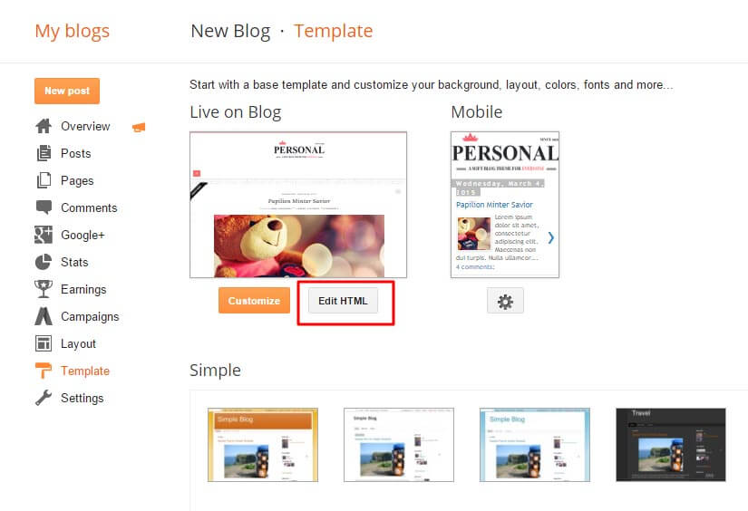And open .xml file by Notepad and select all "Ctrl+A", and copy entire text and paste it here :
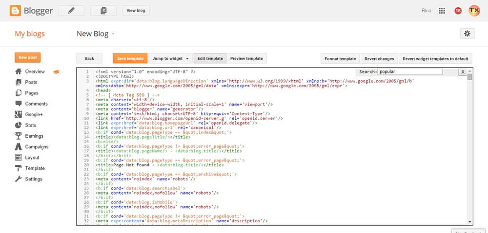To these phase we will customize the template and install some widgets and add some Html.
In your dashboard Select "Layout".
Upload Your Logo Header : In You Blog (Header), Click on "Edit" and applicate all settings below :
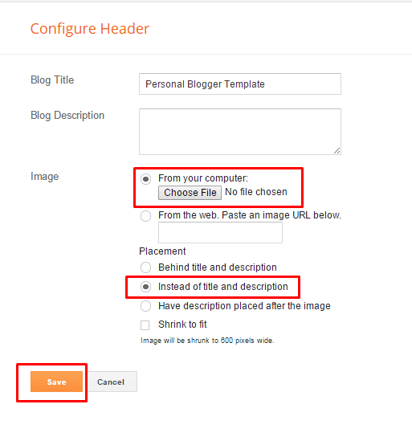 Settings Your Blog Posts :In Blog Posts, Click on "Edit" and applicate all settings below :
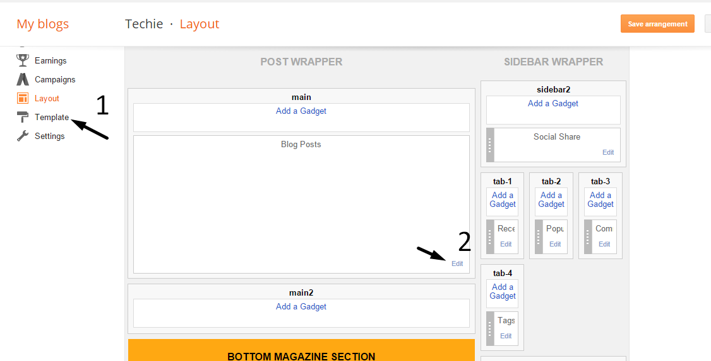 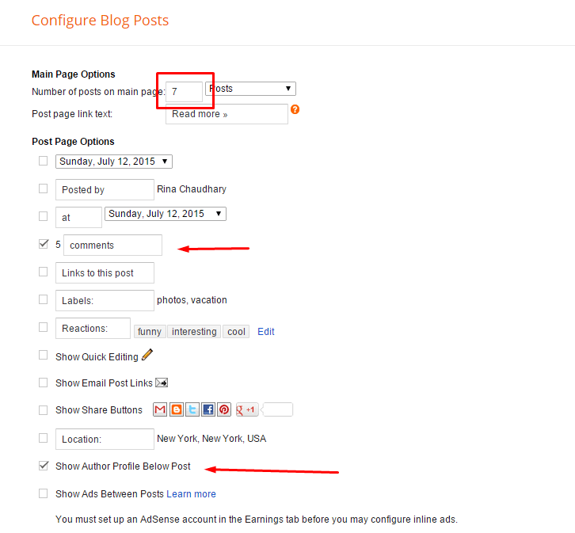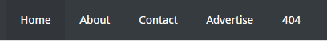
To Edit Top Menu in this theme you can follow this step:
1. Go to -> Blogger Dashboard- >layout -> Pages - > press edit button.
Top Navigation :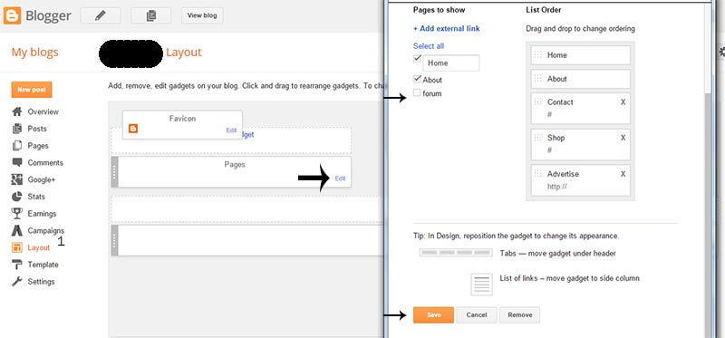
2. Now choose ( check mark ) those pages you want to show on menu and press save. You can also add the external link just press ADD external Link and add you link then save it..
Main Navigation :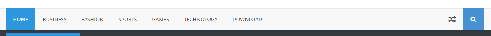
Go to Blogger Dashboard > Template > "Edit HTML"
Now Search the below mention code ( ctrl + f ), then replace the # with your navigation urls.
<nav id='nav'> <div class='container-wrapper'> <nav id='main-nav'> <div class='main-menu'><ul class='menu' id='menu-main'> <li><a class='active' expr:href='data:blog.homepageUrl'>Home</a></li> <li><a href='#'>Business</a> <ul class='sub-menu'> <li><a href='#'>Featured Image</a></li> <li><a href='#'>Slider</a></li> <li><a href='#'>SoundCloud</a></li> <li><a href='#'>Video</a></li> </ul> </li> <li><a href='#'>Fashion</a> </li> <li><a href='#'>Sports</a> <ul class='sub-menu'> <li><a href='#'>Full Width</a></li> <li><a href='#'>Right Sidebar</a></li> <li><a href='#'>Left SIdebar</a></li> </ul> </li> <li><a href='#'>Games</a></li> <li><a href='#'>Technology</a></li> <li><a href='#'>Download</a></li>Page Navigation :
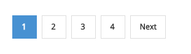
Go to Blogger Dashboard > Template > "Edit HTML"
Now Search the below mention code ( ctrl + f ), then replace the perpage=7;(Post Per page) and numpages=5;( No. of pages in page navigation)
<script type='text/javascript'>
var pageNaviConf = {
perPage: 6,
numPages: 5,
firstText: "First",
lastText: "Last",
nextText: "Next",
prevText: "Prev"
}
</script>
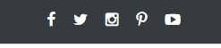
To Edit Top Social icons in this theme you can follow these steps: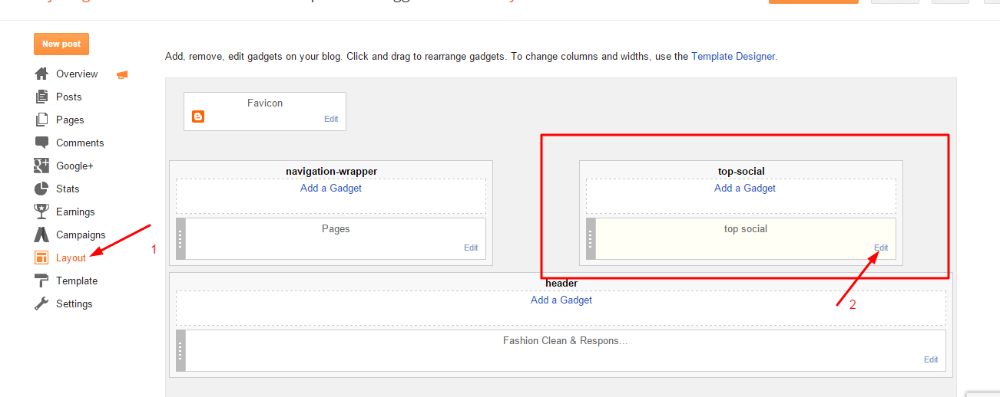
Add your social media name and link >> ADD LINK >> Once you added all the links SAVE.
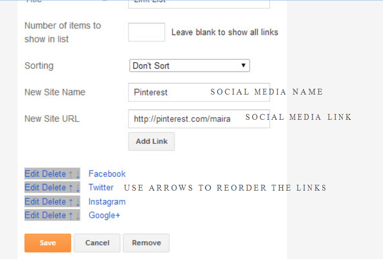
Use http:// or https:// where applicable.
AVAILABLE ICONS: Behance Facebook Twitter Bloglovin Dribbble Flickr GooglePlus Instagram Linkedin Pinterest Vimeo Youtube Vine Soundcloud Goodreads Deviantart Foursquare Reddit Tumblr Spotify Twitch Vk Mailto shop Rss Etsy
Go to Blogger Dashboard > Template > "Edit HTML"
Now Search the below mention code ( ctrl + f ), then replace the user names, id,code with your Meta tags.
<link href='https://plus.google.com/your_google+_id/posts' rel='publisher'/> <link href='https://plus.google.com/your_google+_id/about' rel='author'/> <link href='https://plus.google.com/your_google+_id' rel='me'/> <meta content='Google_verifaction_code' name='google-site-verification'/> <meta content='Bing_verfication_code' name='msvalidate.01'/> <meta content='your_alexa_code' name='alexaVerifyID'/> <meta content='Your_fb_app_id' property='fb:app_id'/> <meta content='your_user_id' property='fb:admins'/> <meta content='@Username' name='twitter:site'/> <meta content='@Username' name='twitter:creator'/> <meta content='INDIA' name='geo.placename'/> <meta content='Author_name' name='Author'/> <meta content='general' name='rating'/> <meta content='IN' name='geo.country'/>
Please Note: in Home Layout areas don't add any widget only HTML one, and don't leave widget empty just follow this
Home Layout Boxs Type : txmag, txvideo, txgallery
To add Home Layout Boxs simply follow this method by change your Label name and Box Type.
[Your Label Here][Box Type]Example :
[Games][txmag]
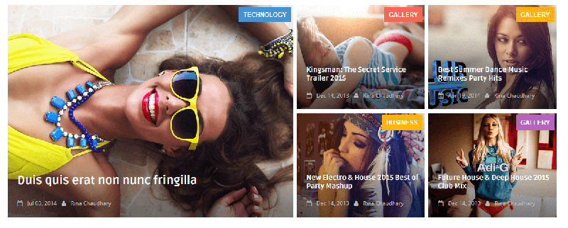
To set up the TOP Featured Image Gallery widgets
Go to -> Blogger dashboard -> layout -> Featured Image widget -> click on add HTML/JAVASCRIPT widget and, then enter - recent or random.
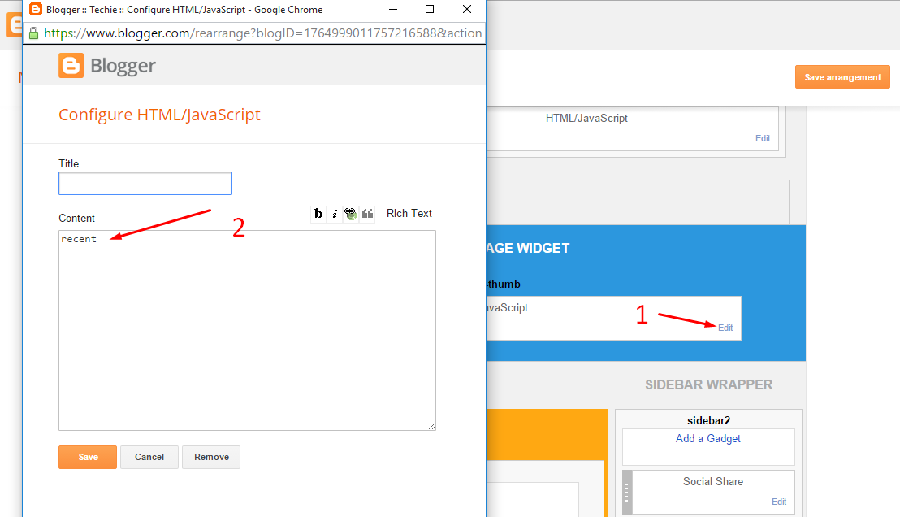
Home Page layout set up - Style 1 (txmag)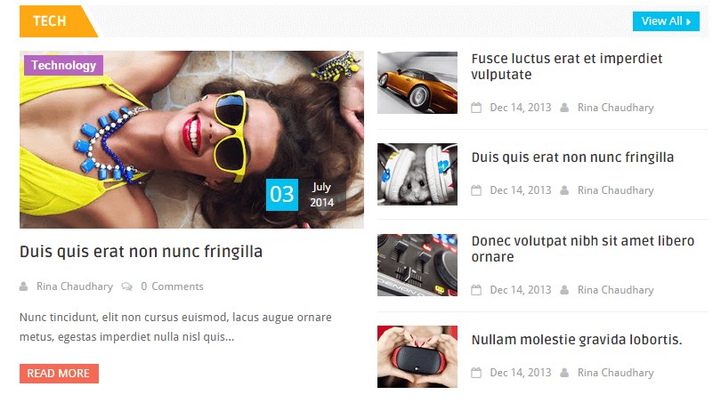
To set up this Style Box
Go to -> Blogger dashboard -> layout -> Top Magazine section or bottom Magazine section-> click on add HTML/JAVASCRIPT widget and, then enter [Your Label Here][txmag]
Example : I have one label with name - Technology.
so my short code become - [Technology][txmag].
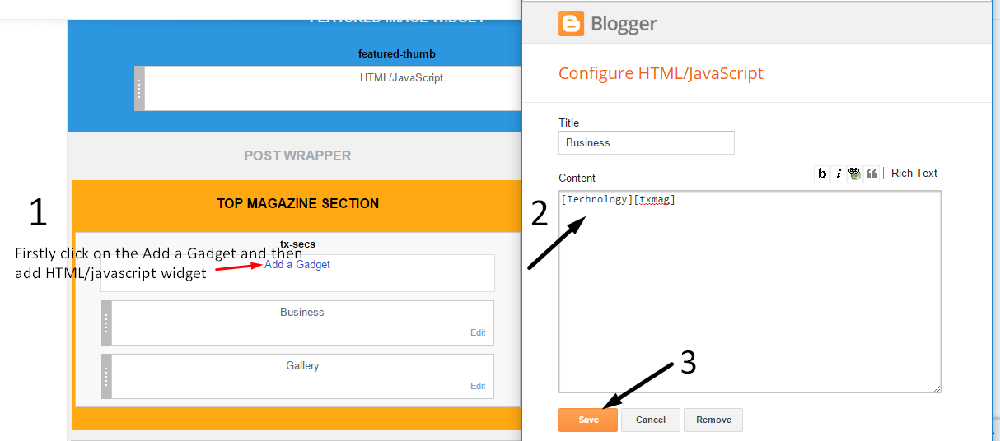
Home Page layout set up - Style 2 (txvideo)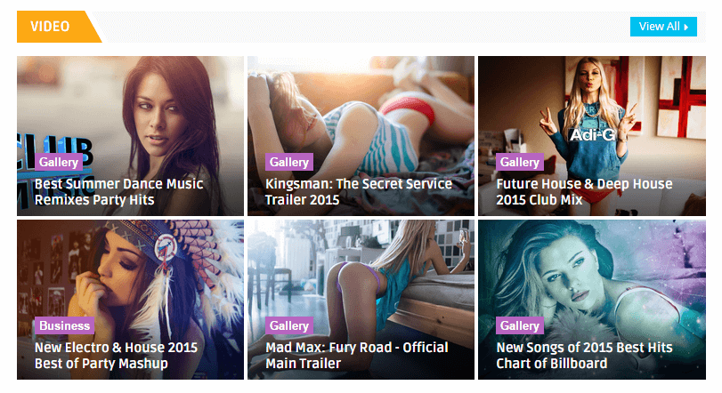
To set up this Style Box
Go to -> Blogger dashboard -> layout -> Top Magazine section or bottom Magazine section-> click on add HTML/JAVASCRIPT widget and, then enter [Your Label Here][txvideo]
Example : I have one label with name - Video.
so my short code become - [Video][txvideo].
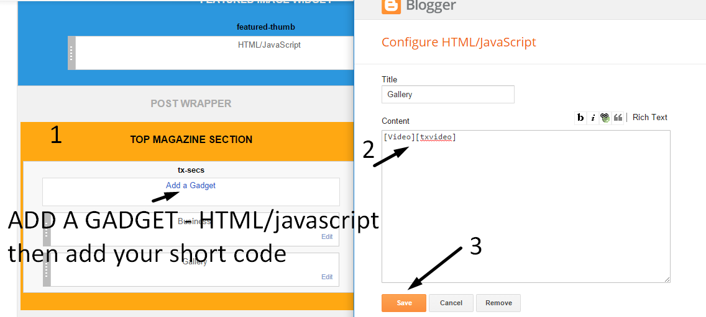
Home Page layout set up - Style 3 (txgallery)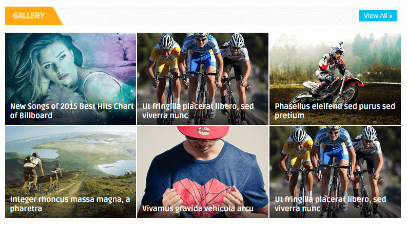
To set up this Style Box
Go to -> Blogger dashboard -> layout -> Top Magazine section or bottom Magazine section-> click on add HTML/JAVASCRIPT widget and, then enter [Your Label Here][txgallery]
Example : I have one label with name - Sports.
so my short code become - [Sports][txgallery].
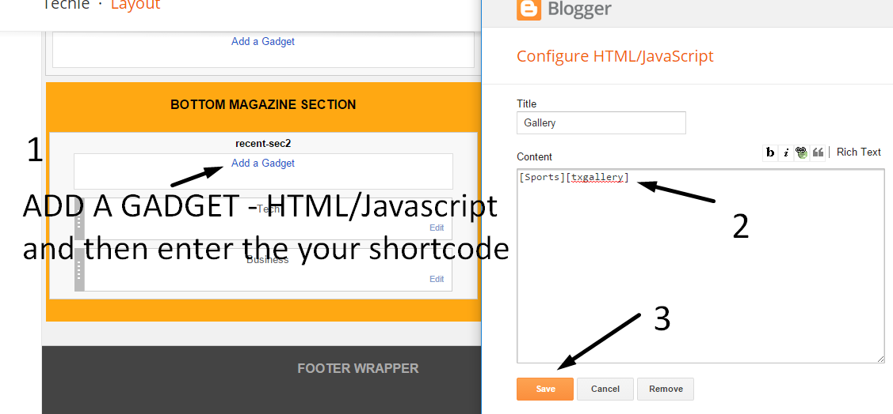
Only in Full version
1. Go to Blogger Dashboard > Layout > Add a Widget on sidebar > Now right the below code
2. Save It
recentposts
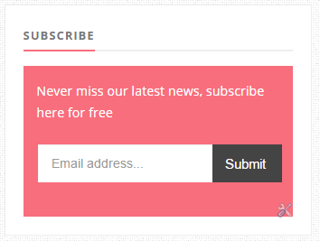
1. Go to Blogger Dashboard > Layout > Subscribe widget > click on edit button
2. Now copy the below mention code and paste into widget.
3. Change the "feedburner_id" word with your feedburner id
4. Save It
<div class="FollowByEmail" id="FollowByEmail1"><div class="follow-by-email-inner"><form action="http://feedburner.google.com/fb/a/mailverify" method="post" onsubmit="window.open("http://feedburner.google.com/fb/a/mailverify?uri=feedburner_id", "popupwindow", "scrollbars=yes,width=550,height=520"); return true" target="popupwindow"><table class="tabletd1"><tbody><tr><td><input class="follow-by-email-address" name="email" placeholder="Email address..." type="text" /></td><td class="tabletd2"><input class="follow-by-email-submit" type="submit" value="Submit" /></td></tr></tbody></table><input name="uri" type="hidden" value="feedburner_id" /> <input name="loc" type="hidden" value="en_US" /></form></div></div>
1. Go to Blogger Dashboard > Layout > Pinterest widget > click on edit button
2. Now copy the below mention code and paste into widget.
3. Change the "User_Name_Here" word with your Pinterest UserName and also the account url.
4. Save It
<p style='text-align:center'>
<a href='https://www.pinterest.com/themexpose' target='_blank'>Follow @ThemeXpose</a>
<div id='pinterest-gallery'></div>
<script>var thumbnailCount = 6;var username = 'User_Name_Here';</script>
</p>
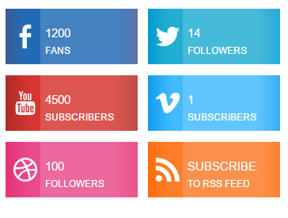
1. Go to Blogger Dashboard > Layout > Follow Us widget > click on edit button
2. Now copy the below mention code and paste into widget.
3. Change the # with your social url and change the Number of followers too.
4. Save It
<div class="social-counter-metro"> <ul class="clearfix"> <li class="fb-wrp"> <div class="btn-count"> <div class="social-counter-metro mask"> <span>Like</span> <a href="#" target="_blank" class="more"></a> </div> <div class="facebook"> <i class="facebook-sicon-48-white"></i> <span>1200</span> <span class="fans">Fans</span> </div> </div> </li> <li class="tr-wrp"> <div class="btn-count"> <div class="social-counter-metro mask"> <span>Follow</span> <a href="http://twitter.com/serpentsoft" target="_blank" class="more"></a> </div> <div class="twitter"> <i class="twitter-sicon-48-white"></i> <span>14</span> <span class="fans">Followers</span> </div> </div> </li> <li class="yt-wrp"> <div class="btn-count"> <div class="social-counter-metro mask"> <span>Subscribe</span> <a href="#" target="_blank" class="more"></a> </div> <div class="youtube"> <i class="youtube-sicon-48-white"></i> <span>4500</span> <span class="fans">Subscribers</span> </div> </div> </li> <li class="vm-wrp"> <div class="btn-count"> <div class="social-counter-metro mask"> <span>Subscribe</span> <a href="#" target="_blank" class="more"></a> </div> <div class="vimeo"> <i class="vimeo-sicon-48-white"></i> <span>1</span> <span class="fans">Subscribers</span> </div> </div> </li> <li class="drb-wrp"> <div class="btn-count"> <div class="social-counter-metro mask"> <span>Follow</span> <a href="#" target="_blank" class="more"></a> </div> <div class="dribbble"> <i class="dribbble-sicon-48-white"></i> <span>100</span> <span class="fans">Followers</span> </div> </div> </li> <li class="rs-wrp"> <div class="btn-count"> <div class="social-counter-metro mask"> <span>Subscribe</span> <a href="#" target="_blank" class="more"></a> </div> <div class="rss"> <i class="rss-sicon-48-white"></i> <span>Subscribe</span> <span class="fans">To RSS Feed</span> </div> </div> </li> </ul> </div>
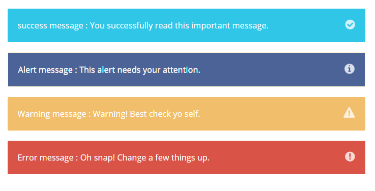
Alert Box/*----success message----*/ <div class="alert-message success"> success message : You successfully read this important message. <i class="fa fa-check-circle"></i> </div> /*----Alert message-----*/ <div class="alert-message alert"> Alert message : This alert needs your attention. <i class="fa fa-info-circle"></i> </div> /*----Warning message-----*/ <div class="alert-message warning"> Warning message : Warning! Best check yo self. <i class="fa fa-exclamation-triangle"></i> </div> /*----Error message-----*/ <div class="alert-message error"> Error message : Oh snap! Change a few things up. <i class="fa fa-exclamation-circle"></i> </div>
As default, Blogger will use its own template for you blog on mobile. So if you want to use Responsive template on mobile devices, please enable it first.
Access your Template menu and click on Gear button of Mobile template.
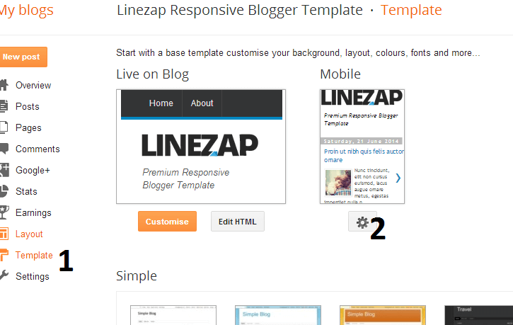
In Choose mobile template window, check "No. Show desktop template on mobile devices." option, then click Save button.
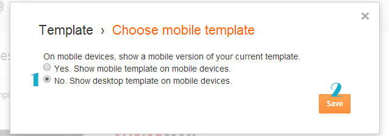